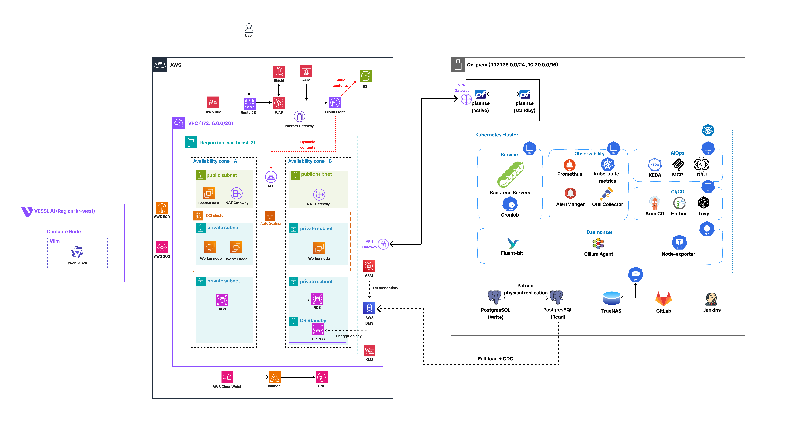
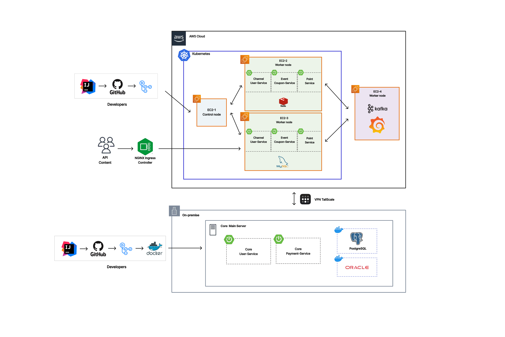
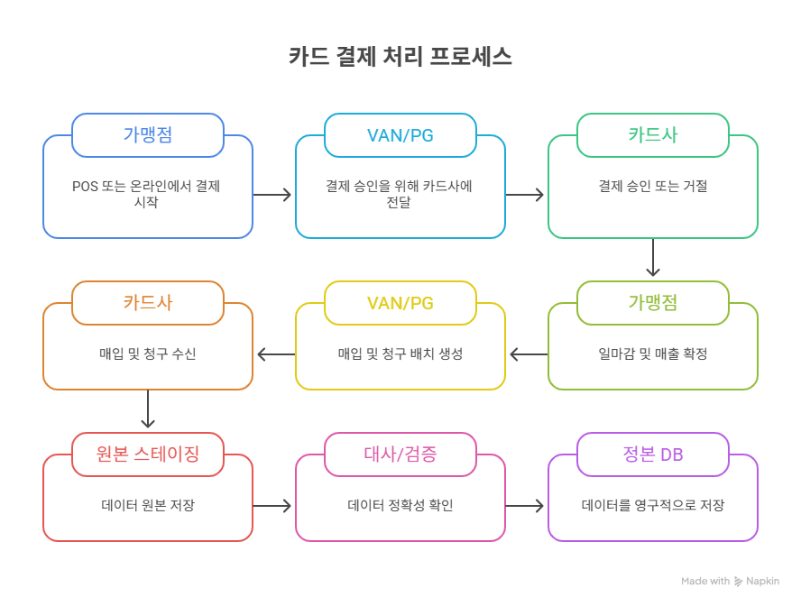

최우수상  콩콩팥팥 시계열 예측 기반 농민 플랫폼 2026년 4월 ~ 2026년 6월 PM / DevOps 농민 데이터를 GRU로 시계열 예측해 KEDA 오토스케일링에 연계하고, 통합 관측 데이터를 MCP 기반 AIOps가 분석해 장애 원인과 대응 방안을 제시하도록 구현했습니다. AWS EKS Kubernetes OpenTelemetry MCP/AIOps GRU/KEDA GitHub 시연영상 기여도
수상  하이브리드 MSA 뱅킹 시스템 망 분리 환경의 트래픽 제어 및 보상 트랜잭션 구현 2026년 1월 ~ 2026년 2월 Backend / MSA 설계 온프레미스와 클라우드 환경 간 트래픽을 제어하고, Kafka 이벤트와 보상 트랜잭션을 적용해 서비스 간 데이터 정합성을 유지하도록 구현했습니다. Spring Cloud Kubernetes Kafka Redis GitHub 시연영상 기여도
 결제 내역 파이프라인 자동화 결제 데이터 ELK 적재 및 실시간 알림 시스템 2026년 1월 ~ 2026년 2월 Data Pipeline 결제 데이터를 자동으로 정제·검증해 저장소에 적재하고, 처리 결과와 오류를 Discord로 전달하는 데이터 파이프라인을 구축했습니다. Elasticsearch Kibana Docker n8n GitHub 시연영상 기여도
꾹모아 로컬 상권 기반 쿠폰 적립 플랫폼 2025년 8월 ~ 2025년 12월 Backend 소상공인과 고객을 연결하는 쿠폰 적립 플랫폼으로, 점주 승인과 리뷰·이미지 관리, QR 기반 쿠폰 발급 기능을 구현했습니다. Spring Boot QueryDSL AWS Redis GitHub 시연영상 기여도